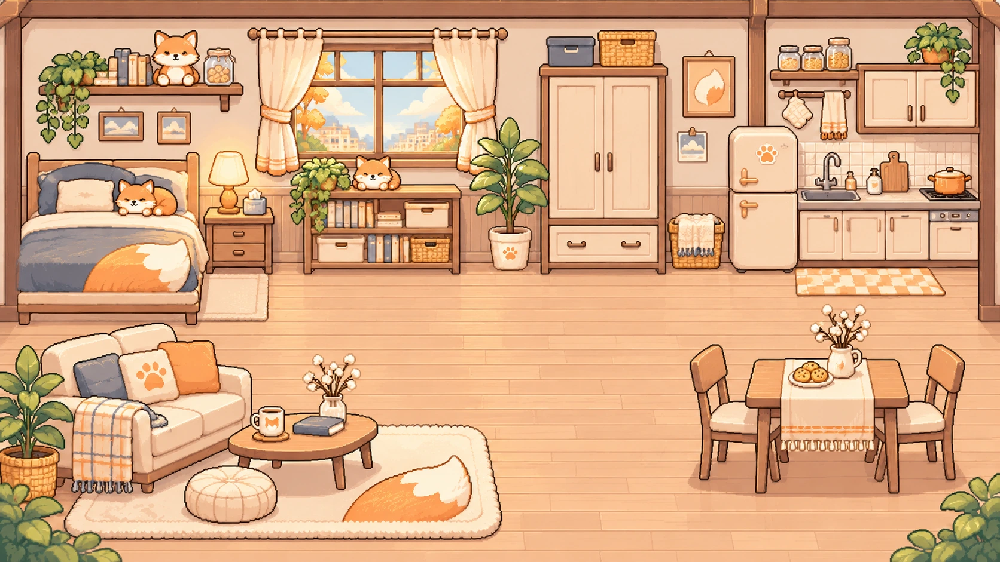

⌂ 양우재의 작은 방햇살 좋은 오후 ☼

오늘도 같이 있어 줄 거지? ♡
✧ 빈 바닥을 톡 눌러 이동!
양우재와 둥이 함께 지내는 공간탭 · 클릭 이동 지원
COOKING WITH LOVE
우재에게 맛있는 밥을 만들어 주세요! ♨
세 가지 미니게임을 완료하면 음식을 만들 수 있어요.
✿ 오늘의 레시피 따뜻한 집밥
COZY KITCHEN ♡
🍳
오므라이스
보들보들한 달걀과 따뜻한 밥!
완성된 음식 0개
DRESS UP
오늘은 어떤 옷을 입을까요? ✿
의상을 누르면 양우재의 옷이 변경되고 자동 저장돼요.
데일리 후드
LITTLE MEMORIES
양우재와 둥의 다이어리 ✎
오늘의 요리, 일상, 놀이가 여기에 기록됩니다.
두근두근, 오늘의 추억도 차곡차곡
SAVE & KEEP
우재와 둥의 추억 보관하기 ♡
웹과 Mac 앱 모두 진행 상황을 자동 저장하며, 백업 파일로 따로 보관할 수 있어요.
✿ 게임 데이터
저장된 상태를 확인하는 중...
자동 저장만 믿지 않고 가끔 백업 파일을 받아두면, 브라우저 데이터 삭제나 기기 변경 때 복원할 수 있습니다.
☀ 화면과 시간
따뜻한 연오렌지 테마와 원본 일러스트를 사용합니다. 배경음악이나 음원은 포함하지 않았어요.
사이트를 홈 화면에 추가하면 모바일에서 앱처럼 열 수 있습니다. 백업은 따로 보관하세요.